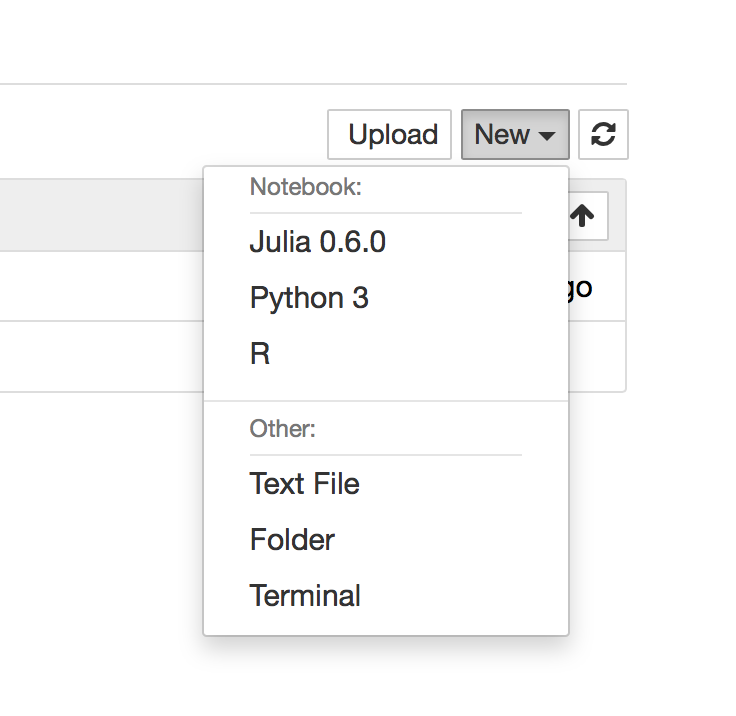
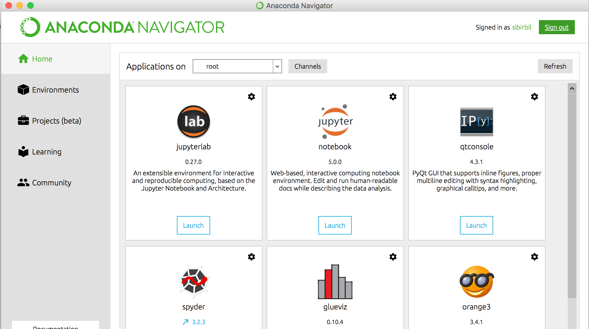
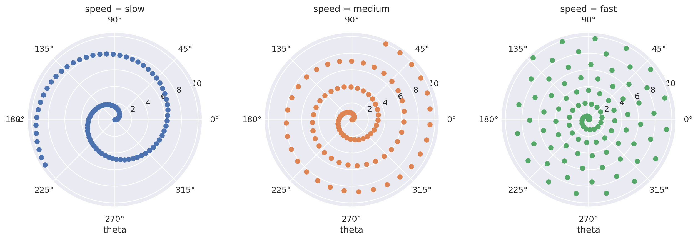

(3**4) + (2*4)89Kısa cevap: Oldukça yararlı bir şeydir. Uzun cevap: Aldığınız notları ve hesaplamalarınızı bir arada tutmak için kullanabileceğiniz en başarılı araçlardan biridir. Tekrar edilebilir araştırmada ve veri biliminde sıkça kullanılır. Veri Defteri’nde okuyacağınız yazıları (bu dahil) biz de Jupyter Notebook kullanarak yazacağız ve hazırladığımız defterleri GitHub sayfamızda sizlerle paylaşacağız. Böylece sadece okumakla kalmayıp, paylaştığımız defterlerdeki hesaplamaları siz de bilgisayarınızın başında deneyebilirsiniz.

Daha önce Bol Bilim için genel bir yazı hazırlamıştım. Orada da Jupyter Notebook’tan bahsettim. Şimdi o tanıtımı biraz daha genişletip, sizleri Veri Defteri’nden daha fazla yararlanabilecek hale getirelim.

Jupyter Notebook tek başına da yüklenebilir. Ancak benim tavsiyem Anaconda dağıtımını, Python 3.6 seçeneği ile kurmanız. Bu dağıtım ile birlikte bilgisayarınıza hem Jupyter Notebook kurulacak, hem de çeşitli paketlerle zenginleştirilmiş bir Python programlama diline sahip olacaksınız. Veri Defteri’nde her ne kadar farklı dilleri kullanmayı planlıyorsak da, en sık kullanacağımız dilin Python olacağını düşünebilirsiniz. Bu noktada şunu da söylemem yerinde olur. Jupyter Notebook’u Python dışında başka pek çok programlama dili ile de kullanabilirsiniz. İsterseniz kullanılabilen dillerin bir listesine bir göz atın. Özellikle veri bilimi camiasında çokça kullanılan R ve Julia dillerini yüklemeyi düşünebilirsiniz.
Anaconda dağıtımını bilgisayarınıza kurduktan sonra Anaconda Navigator diye bir programın yüklendiğini göreceksiniz. Bu program ile yeni Python paketleri yükleyebilir ve güncellemeleri yapabilirsiniz. Ayrıca soldaki menüyü kullanarak veri analizi konusundaki ders notlarına, eğitim videolarına ve çalışma gruplarına erişebilirsiniz. Ana sayfada karşınıza birkaç program çıkacak. Onların arasından notebook programı ile Veri Defteri sayfalarını kurcalamaya başlayabilirsiniz. Bilgisayarınıza Jupyter Notebook kurmadan önce bir denemek isterseniz şu sayfaya bir göz atabilirsiniz.

Anaconda Navigator üzerinde notebook seçeneğine tıklayınca, varsayılan internet tarayıcınız açılacak. Bu ekrandan daha önce kaydettiğiniz bir defteri açabilir ya da yeni bir deftere başlayabilirsiniz. Yeni deftere başlamak için sağ üst köşeden bir programlama dili seçmeniz yeterli. İlk başta sizin listenizde sadece Python 3 gözükecektir. Arzu ederseniz zamanla diğer dilleri de ekleyebilirsiniz.
Gelelim açılan defterlerin nasıl kullanılacağına. Kabaca her defterin alt alta sıralanmış kutucuklardan oluştuğunu düşünebilirsiniz. Bu kutucuklarda kodlama ve hesaplama işlerinizi yapabilirsiniz. Bir hücrenin içine yazılanları çalıştırmak için, hücrenin içine tıklayıp, Ctrl ve Enter tuşlarına birlikte basmanız (Ctrl + Enter) yeterli. Shift + Enter ya da Alt + Enter tuşlarını da deneyebilirsiniz. İlki hücreyi çalıştırıp bir sonraki hücreye geçer. İkincisi ise hücreyi çalıştırıp hemen altına yeni boş bir hücre açar. Ben bu sayfayı Python defteri olarak açtım. Onun için basit bir işlemi hemen deneyebilirim.
(3**4) + (2*4)89Bu çok basit oldu. Bir de kod yazmaya bakalım. Şu sayfadaki örnek işimizi görür.
%matplotlib inline
import matplotlib.pyplot as plt
import numpy as np
import pandas as pd
import seaborn as sns
sns.set()
r = np.linspace(0, 10, num=100)
df = pd.DataFrame({'r': r, 'slow': r, 'medium': 2 * r, 'fast': 4 * r})
df = pd.melt(df, id_vars=['r'], var_name='speed', value_name='theta')
g = sns.FacetGrid(df, col="speed", hue="speed",
subplot_kws=dict(projection='polar'), height=4.5,
sharex=False, sharey=False, despine=False)
g.map(plt.scatter, "theta", "r")
Ayrıca bu hücrelere metin ve matematiksel denklemler de yazabilirsiniz. O yazılar için Markdown adı verilen ve basit kurallar ile metin biçimlendirmeye yarayan bir dil kullanılıyor. Örneğin bir kelimeyi koyu harflerle yazmak isterseniz, kelimenin önüne ve arkasına **** işaretlerini koymanız yeterli. İlk başta garip gözükse de, alıştıktan sonra metni çok hızlı düzenleyebildiğinizi göreceksiniz. Benzer şekilde matematiksel ifadeleri de LaTeX komutları ile yazabilirsiniz:
\[ \frac{\partial \Psi}{\partial x^2} + \frac{8 \pi^2}{h^2}(E - V)\Psi = 0. \]
Burada Jupyter Notebook ile ilgili temel birkaç noktayı yazdım. Kullandıkça daha pek çok özelliği olduğunu keşfedeceğinize eminim. Bu noktada bir ara verip şu sayfayı ziyaret etmenizi öneririm. Orada Jupyter Notebook kullanarak farklı programlama dilleri ile hazırlanmış pek çok sayfa, ders notları ve hatta kitaplar var. Başkalarının hazırladıkları incelemek çok öğretici olabilir.
GitHub sayfamıza koyduğumuz dosyaları doğrudan bilgisayarınıza indirmek yerine sürüm kontrol programı Git’i kullanmanızı tavsiye ederim. Aslına bakarsanız veri işleme konularına bulaşacak herkes için Git bilmek neredeyse şart diyebilirim. Eğer daha önce hiç kullanmadıysanız ve öğrenmek isterseniz, şu sayfadan başlayabilirsiniz.